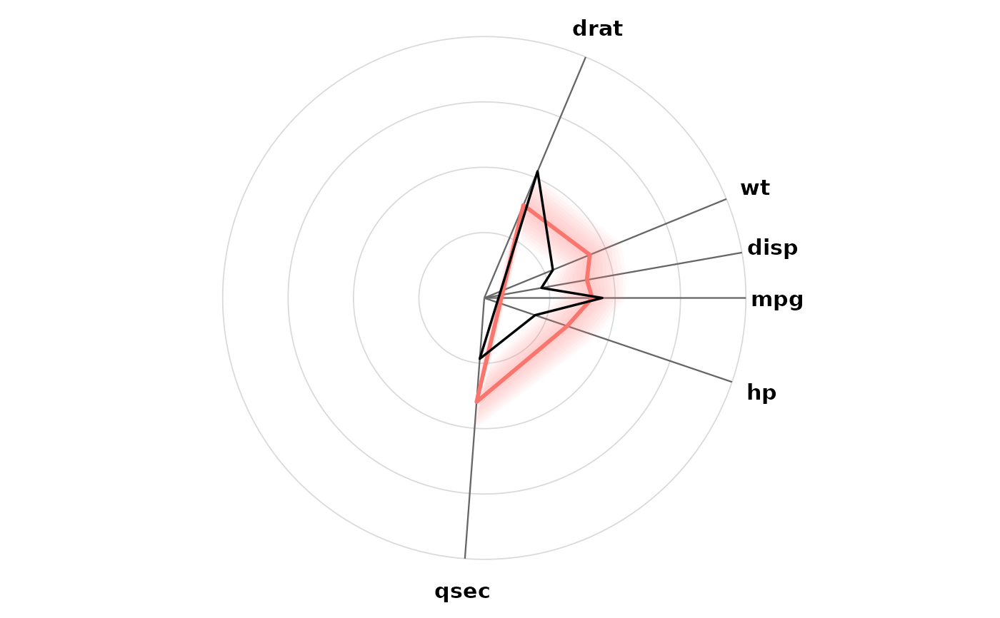
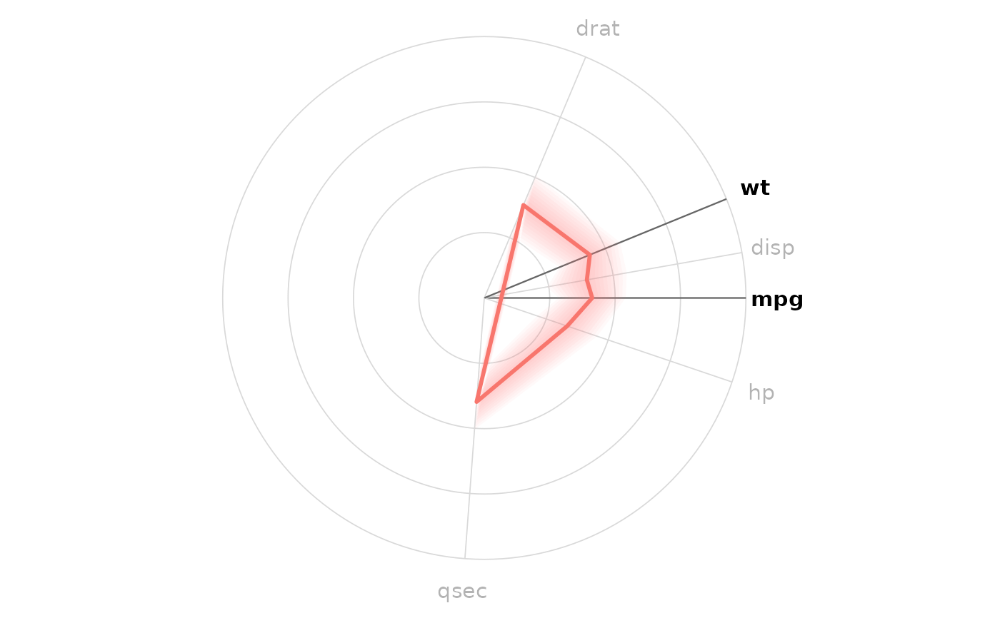
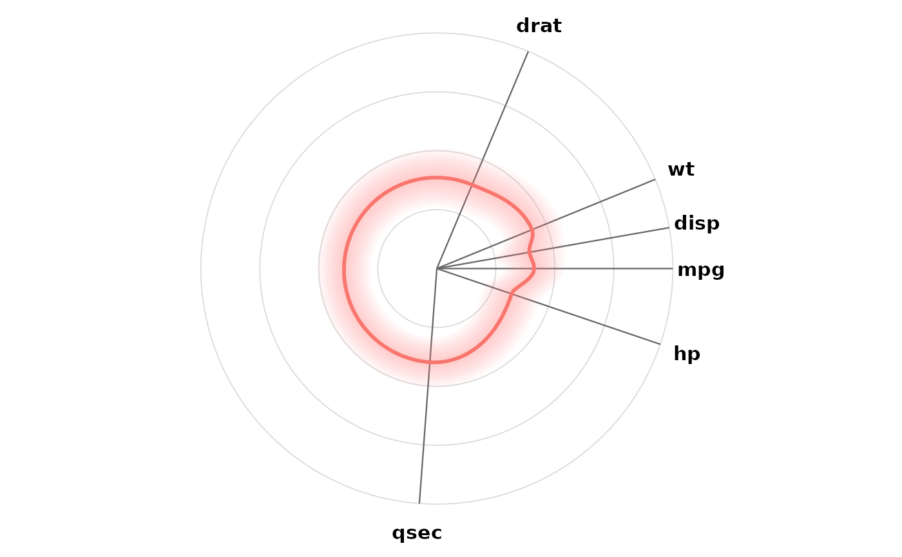
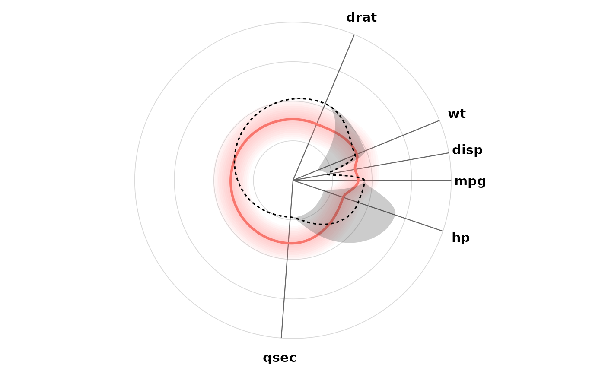

Plot method for visx_coradar objects
plot.visx_coradar.RdDraws the co-radar plot: axes placed by correlation structure, one mean polygon per archetype, and (optionally) a shaded band showing within-group variability that fades with distance from the mean shape.
Arguments
- x
a visx_coradar object
- sd_band
if TRUE (default), shade a band of
mean +/- band_width * sd / 2around each archetype- band_width
multiplier for the width of the variability band (default 1)
- rounded
if TRUE, draw archetype shapes, variability bands, and individual overlays as rounded closed curves instead of straight-edged polygons. Between adjacent axes the radius changes monotonically (equal values trace a perfect circular arc, and the curve never moves opposite to the net direction), with slopes allowed to change abruptly at each axis. Useful when correlated axes occupy a narrow arc: the segment closing a straight polygon (last axis back to the first) cuts across the plot, while a rounded shape sweeps around it
- individuals
optional individual observations to overlay as black polygons: either row indices into the (complete-case) data, or a data.frame of raw values containing the plotted variables (normalized to the scale of the original data)
- highlight
optional character vector of variable names whose axes are emphasized; remaining axes and labels are greyed out
- imputed
optional multiply imputed data for individuals with missing values: a list of M completed data.frames with identical rows, each containing the plotted variables (for example
mice::complete(imp, "all")). Each requested individual is drawn as a shaded envelope across the M draws with a dashed median shape. Where a variable was observed all draws agree, so the envelope pinches to a point on that axis; where it was imputed the envelope opens into a region spanning the plausible values- imputed_rows
rows of the completed data.frames to draw. These index the data that was passed to the imputation model, not the complete-case data held in
x. Defaults to the rows that actually differ across the imputations, i.e. the people who were missing at least one plotted variable; complete rows carry no uncertainty and are skipped. If more than 12 rows qualify, choose them explicitly rather than overplotting- extent
width of the imputation envelope:
"range"(default, the full min-to-max span of the M draws) or"quantile"- probs
two probabilities defining the envelope when
extent = "quantile"(default 10th and 90th percentiles)- label_size
size of the axis labels (default 4)
- legend
if TRUE, show the archetype legend when groups are present
- ...
additional arguments (ignored)
Examples
result <- coradar(mtcars, vars = c("mpg", "disp", "hp", "drat", "wt", "qsec"))
plot(result, individuals = 1)

plot(result, highlight = c("mpg", "wt"))

plot(result, rounded = TRUE)

# a person whose hp and wt are missing, with 5 imputations of each. In
# practice these come from mice::complete(imp, "all")
set.seed(1)
person <- mtcars[1, c("mpg", "disp", "hp", "drat", "wt", "qsec")]
imps <- lapply(1:5, function(i) {
d <- person
d$hp <- sample(mtcars$hp, 1)
d$wt <- sample(mtcars$wt, 1)
d
})
plot(result, imputed = imps, rounded = TRUE)
